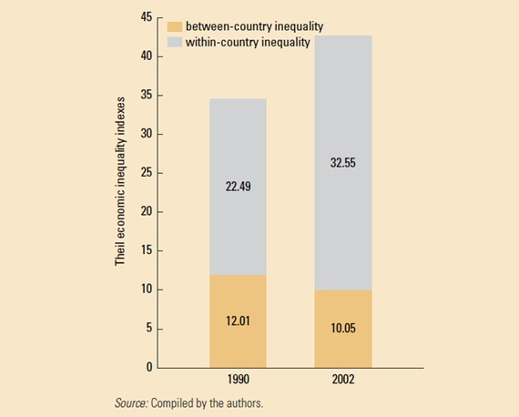

COHESION AND INEQUALITY
Cohesion and Inequality
We had argued in our earlier research that middle-income countries would need to pay special attention to inequality because the shifting growth and urbanization strategies would likely worsen the distribution of labor income, and suggested that fiscal transfers to reduce unequal access to social services would be a good instrument. The last few years have been marked by an escalation of concerns about inequality. Even the IMF has begun to emphasize the links between inequality and growth (Ostry et al. 2014).
Inequality is rising in east asia despite regional convergence
Over the last decade, there has been a rapid rise in most indices of country inequality across the world, including in, but not restricted to, middle-income countries. The exception has been in Latin America, where already very high levels of inequality have slowly started to decline. In high-income countries, the concern has been with the slow wage growth of blue-collar workers. In many middle-income countries there is concern with graduate unemployment and the difficulties faced by young people in finding their first job. In some Arab middle-income economies, unemployment rates for graduates are even higher than the national average.